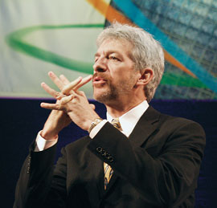

Андрей Ездаков
В конце октября Москва во второй раз принимала одно из самых крупных и значимых мероприятий в мире ИТ - Форум Intel для разработчиков (Intel Developers Forum, IDF).
IDF Russia в этом году прошел в рамках осенней серии форумов Intel (http://www.intel.com) под девизом "Ускорение конвергенции технологий: инновации в вычислениях и коммуникациях". В его работе приняли участие свыше тысячи инженеров, специалистов в области ИТ, разработчиков, руководителей ИТ-подразделений предприятий, маркетологов и аналитиков из различных городов России и стран СНГ.
Участники форума получили возможность познакомиться с новейшими технологиями и устройствами для создания бизнес-решений на базе архитектур Intel. Спонсорами IDF Russia 2003 стали компании Fujitsu Siemens Computers (http://www.fujitsu-siemens.ru), Kraftway (http://www.kraftway.ru) и Microsoft (http://www.microsoft.ru) ("золотые" спонсоры), а также компания Nvidia (http://www.nvidia.ru, "серебряный" спонсор). Перед участниками мероприятия выступили представители высшего руководства корпорации Intel, а от имени Правительства РФ собравшихся приветствовал первый заместитель министра РФ по связи и информатизации Андрей Коротков.
Помимо пленарных докладов и выступлений, участники форума имели возможность посетить технические семинарские и лекционные занятия в семи секциях (разработка ПО, аппаратное обеспечение, коммуникационные технологии, научные исследования и конструкторские разработки, мобильные технологии, решения для предприятий, спонсорский поток), а также лабораторные занятия и специальную сессию Intel Capital.
Первый день работы форума открыл старший вице-президент корпорации Intel, генеральный менеджер подразделения Enterprise Platforms Group Майкл Фистер (Michael J. Fister). Свое выступление он посвятил корпоративной стратегии Intel в условиях активно развивающегося процесса интеграции коммуникационных и вычислительных технологий и решений.
|  | Доклад Майкла Фистера о корпоративной стратегии Intel.
|
Внедрение инфокоммуникационных решений зависит от множества факторов, в частности, от состояния мировой экономики. Интеграция технологий бытовой электроники, телекоммуникаций и вычислительной техники становится все более очевидной необходимостью для сообщества разработчиков, поставщиков систем и пользователей. Как полагает г-н Фистер, Россия имеет все шансы стать лидером и на рынке вертикальных решений для таких отраслей, как финансы, здравоохранение, медико-биологические науки, производство и государственное управление, и в сфере горизонтальных решений, включающих защищенные высокопроизводительные вычислительные системы, Web-сервисы и средства повышения производительности труда сотрудников.
На последовавшем за выступлением круглом столе, который Майкл Фистер проводил совместно с генеральным директором российской компании Kraftway Computers Алексеем Кудрявцевым, обсуждались вопросы развития серверных технологий как "сердца" современных инфокоммуникационных решений. Оба руководителя подчеркнули целый ряд преимуществ, которые предоставляет как сборщикам серверов, так и заказчикам использование готовых серверных платформ. Такая технология становится дополнительной гарантией качества изделий и их программно-аппаратной совместимости, что особенно заметно влияет на устойчивость работы устройств. Кроме того, однотипность решений упрощает диагностику серверов, облегчает их сопровождение и в результате снижает расходы на содержание ИТ-инфраструктуры предприятия.
Новые серверы Kraftway на базе технологии Intel ItaniumРоссийская компания Kraftway, впервые ставшая "золотым" спонсором IDF, представила на форуме две свои новые разработки: сервер GEG Express Blade и ультратонкий сервер GEG Express 6203 на базе процессоров Intel Itanium 2. Двухпроцессорные серверы GEG Express 6203, скомпонованные для установки в монтажную стойку и имеющие высоту всего 1U, предназначены для создания высокопроизводительных вычислительных кластеров. Эти изделия ориентированы в первую очередь на корпоративных заказчиков, строящих инфраструктуру, следуя современному подходу компактного размещения в монтажных шкафах. Серверы GEG Express 6203 поддерживают все процессоры семейства Intel Itanium 2, в том числе и кристаллы с пониженным энергопотреблением, что позволяет им достигать высокой производительности при минимальном занимаемом пространстве. Объем оперативной памяти новых серверов варьируется в диапазоне от 1 до 8 Гбайт. Устройства семейства GEG Express 6203 комплектуются жестким диском стандарта IDE или SCSI, приводом CD-RW и поддерживают конфигурацию RAID 1 и 5 для внешних дисков. Для построения высокопроизводительных кластеров серверы поставляются не только с традиционными сетевыми интерфейсами (Gigabit Ethernet или Myrinet), но и с межсоединениями нового типа, использующими технологию InfiniBand, например, с адаптерами и коммутаторами производства компаний Mellanox или Infinicon. Устройства семейства GEG Express 6203 логично дополняют существующую продуктовую линейку серверов компании Kraftway на базе процессоров Intel Itanium 2. Сейчас в нее входит широкий спектр высокопроизводительных 64-разрядных серверов архитектуры Intel с поддержкой от 1 до 4 процессоров, монтируемых в стойку и имеющих высоту 1, 2 и 4U. Такой модельный ряд позволяет Kraftway гибко реагировать на требования заказчиков к производительности, энергопотреблению, стоимости и плотности создаваемых решений. Одновременно с GEG Express 6203 компания продемонстрировала участникам столь представительного мероприятия сервер GEG Express Blade, анонсированный еще в сентябре. Он построен на базе шасси Intel Enterprise Server Blade высотой 7U и вмещает до 14 вычислительных модулей, каждый из которых поддерживает два процессора Intel Xeon. Отдельный модуль занимает один разъем корпуса и имеет два интегрированных канала Gigabit Ethernet для подключения к сети, в нем устанавливается от 4 до 8 Гбайт оперативной памяти стандарта DDR266 с кодом коррекции ошибок. В корпус Intel Enterprise Server Blade можно также установить двухканальный модуль Fibre Channel со скоростью передачи 2 Гбит/с. Он позволяет интегрировать сервер в существующую инфраструктуру типа SAN. Стоит также отметить, что все серверы семейства GEG Express Blade оснащаются специальным модулем управления, который поддерживает удаленное администрирование компонентов устройства через глобальные коммуникации. Формат корпуса Intel Enterprise Server Blade позволяет создавать на его основе мощные и гибкие вычислительные решения, отвечающие требованиям современных корпоративных информационных систем. |
Второй день работы форума начался пленарным докладом вице-президента, главного директора по технологиям Intel Communications Group Эрика Ментцера (W. Eric Mentzer). Его выступление было посвящено созданию стандартных модульных компонентов для телекоммуникационного оборудования и развитию этого сегмента рынка. Коснулся г-н Ментцер и новых возможностей, которые предоставляют разработчикам модульные решения, позволяющие сократить сроки проектирования оборудования следующего поколения для проводных и беспроводных сетей при одновременном снижении затрат.
До сих пор при проектировании телекоммуникационного оборудования разработчики должны были укладываться в рамки жестких требований к надежности, стабильности и рабочим характеристикам, поэтому оно велось невысокими темпами. Сейчас, с появлением множества стандартизованных модульных компонентов, компании-разработчики получили в свое распоряжение широкий выбор базовых элементов - от полупроводниковых комплектующих и ПО до готовых платформ, благодаря чему могут быстро собирать необходимые решения.
Внедрение концепции модульного построения систем, по-видимому, приведет к снижению себестоимости продукции и повышению качества ее проектирования. Как отметил Эрик Ментцер, в корпорации Intel и в других ведущих компаниях отрасли убеждены, что эпоха модульного телекоммуникационного оборудования уже наступила.
Эрик Ментцер о создании стандартных модульных компонентов для телекоммуникационного оборудования. |
По завершении выступления Эрик Ментцер принял участие в круглом столе, посвященном вопросам исследований и разработок Intel в области коммуникационных технологий. Он особо подчеркнул тезис: конвергенция вычислительных и коммуникационных технологий ведет к тому, что со временем все вычислительные устройства смогут осуществлять передачу данных, а все коммуникационные устройства будут обладать вычислительными возможностями. Это означает, что грань между коммуникационными и вычислительными решениями станет весьма условной.
В качестве долговременного прогноза г-н Ментцер назвал оценку количества таких гибридных устройств к 2010 году. К этому времени в мире предположительно будет около 1,5 млрд компьютеров с технологией широкополосного доступа (как проводного, так и беспроводного) и примерно 2,5 млрд телефонов с вычислительными возможностями, аналогичными современным ПК на базе Intel Pentium 4 с частотой 4 ГГц.
О степени внимания, уделяемого Intel развитию коммуникационного направления исследований, говорит хотя бы то, что сейчас каждый третий из 7000 разработчиков корпорации занят в данной области, и то, что объем инвестиций Intel Communications Fund в развитие 100 компаний в 17 странах мира, занимающихся перспективными исследованиями в этой сфере, составил 500 млн долл.
Достижения технологий беспроводного доступа были наглядно продемонстрированы в ходе работы IDF. В здании Президиума Российской академии наук (где проводился форум) была развернута публичная беспроводная локальная сеть стандарта 802.11b, которая обеспечивала любому обладателю мобильного или карманного компьютера с соответствующим адаптером, попавшему в зону ее действия, полную свободу доступа к электронной почте, ресурсам Интернета, корпоративным информационным системам, базам данных и т. д.
Сеть охватила все основные площадки, на которых проходили мероприятия. Скорость передачи данных по радиоканалу составила до 11 Мбит/с. Единовременно сетью могли пользоваться до 400 участников форума, при этом в каждой открытой сессии гарантировалась скорость передачи данных не менее 150 Кбит/с. Эта беспроводная сеть стала наглядной демонстрацией стратегии Intel, направленной на ускорение конвергенции вычислительных и коммуникационных устройств путем активного внедрения беспроводных технологий.
Разработчиком и поставщиком беспроводного решения IDF Russia 2003 выступил "технологический спонсор" форума - российская фирма "Седиком", партнер Alvarion - компании, которая подписала с Intel стратегическое соглашение по разработке WiMAX-сертифицированных систем широкополосного беспроводного доступа на основе разрабатываемого специалистами Intel чипа, поддерживающего стандарт IEEE 802.16a.
В рамках второго российского Форума Intel для разработчиков была также организована выставка передовых компьютерных и коммуникационных технологий. Подобная практика, традиционная для всех IDF, позволяет разработчикам воочию увидеть новинки и последние разработки в отрасли. Подразделения самой корпорации представили восемь стендов. В частности, стенд коммуникационного подразделения Intel (Communication Sales Organization, CSO) был посвящен упомянутой выше технологии WiMAX. На стенде в режиме реального времени демонстрировались возможности широкополосной беспроводной связи в сети стандарта 802.16a. Выставочный образец показал возможность передачи данных, в том числе аудио- и видеоприложений, со скоростью в десятки мегабит в секунду.
Нижегородский центр Intel по разработке ПО предоставлял посетителям возможность увидеть архитектуры и технологии Intel в области трансляции и обработки аудио- и видеопотоков. Экспозиция инженеров Intel из Сарова (Арзамас-16), работающих в области технологий распознавания речи, демонстрировала автоматическое распознавание русской речи и ее перевод на английский язык.
Целый ряд российских и зарубежных компаний демонстрировал посетителям свои новые решения на базе серверных платформ Intel. Например, компания "Клондайк" анонсировала высокопроизводительные серверы семейства Klondike President 64Kx с двумя или четырьмя процессорами Intel Itanium 2. Компания "К-Системс" показала серверы K-Systems Patriot Titan, также основанные на технологии Intel Itanium 2.
Автономные системы Fujitsu Siemens ComputersКомпания Fujitsu Siemens Computers, "золотой" спонсор форума, продемонстрировала участникам IDF дальнейшее развитие своей концепции автономных систем. Они представляют собой самоуправляемые сложные ИТ-системы серверной архитектуры с развитой инфраструктурой хранения данных, отчасти сходные с нервной и иммунной системами человеческого организма. Такие решения уменьшают сложность систем за счет внутренней автоматизации и использования функций самоконфигурирования, самооптимизации, самозащиты и самовосстановления. Кроме того, в них оптимизируется использование ресурсов, что позволяет сократить совокупную стоимость владения (TCO) информационной системой. Помимо снижения TCO, на эффективность современного бизнеса влияют такие важные параметры, как надежность ИТ-системы, ее управляемость, доступность и масштабируемость, а также возможности обеспечения информационной безопасности. Всем этим требованиям наилучшим образом удовлетворяют решения класса автономных систем. Для создания самоуправляемых автономных систем Fujitsu Siemens использует технологию SysFrame, на базе которой разработан набор аппаратных и программных компонентов для организации адаптивной вычислительной инфраструктуры FlexFlame for mySAP Business Suite. Это решение предназначено для организации недорогих и несложных в использовании серверных систем. Оно состоит из небольшого количества стандартных модулей и рассчитано на масштабируемое развертывание автономных информационных систем - от небольших офисов с примерно 50 пользователями до крупных корпоративных структур, насчитывающих тысячи сотрудников. В числе таких модулей - серверы Primergy Intel-архитектуры, работающие под управлением ОС Linux, и серверы PrimePower на базе архитектуры Solaris/SPARC. Специальное ПО для работы с файлами, созданное компанией Network Appliance, интегрировано в систему и выполняет функции хранения данных. Серверы Primergy BX300 Blade Server содержат до 20 модулей, каждый из которых реализован на одной плате с одним или двумя процессорами, ОЗУ, жесткими дисками и интерфейсом подключения к локальной сети. Вся эта система имеет высоту всего лишь 3U. В линейку серверов PrimePower входит множество модификаций различной производительности - от небольших устройств масштаба рабочих групп до мощных машин масштаба предприятия. Это также расширяет возможности подбора конфигурации системы с необходимой пользователям функциональностью и производительностью. Масштабируемое ПО компании Network Appliance с высокой степенью готовности используется для консолидации данных и упрощения управления ими. К преимуществам систем, создаваемых на основе FlexFlame for mySAP Business Suite, следует отнести возможность автоматического конфигурирования, реализуемую благодаря централизованной сетевой загрузке ОС, в процессе которой определяется имеющееся аппаратное обеспечение и выполняется настройка на него. Файловая система WAFL (Write Anywhere File System) позволяет автоматически распределять данные по функционирующим жестким дискам. Специальная программа обеспечивает самовосстановление системы в случае сбоев. По мнению специалистов компании Fujitsu Siemens Computers, такое решение наилучшим образом подходит для развертывания систем с предоставлением программных услуг "по требованию". |